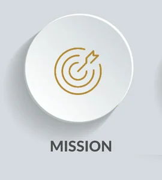

ABOUT BLISS HOSPITAL
Established 2020 Bliss Hospital is a tertiary care Hospital that lays its foundation on a Patient first' ideology
and follows a Greenfield over Brownfield strategy for delivering leading-edge healthcare to cater to the changing
needs of the growing populace. Situated in the vicinity of the Moshi Pune - Nashik Express Highway. Bliss Hospital
is the epitome of medical innovations and quality healthcare that offers easy connectivity and accessibility to
patients from all the nodes across Pune.
Our VALUES
Respect for Associates & Teamwork Partnering for success.
Always Learning.
Ethical Practices.
Focus on Patient and Patient Care.
To provide extraordinary customer satisfaction.
Treating all people with respect and dignity.
Acting always with utmost integrity.
Creating value for the society we live in.
Our VISION
To create a Protecting Healthcare System, Integrated, Sustaining and Restoring Health through Best in Class Medical
Practices and Cutting Edge Technology developed through the Best Scientific Minds.
Our MISSION

Deliver patient care services.
Delivery of specialized medical care.
Be the preferred choice for the leading medical professionals and scientific minds.
Be an active partner in local community initiatives and contribute to its well-being and development.